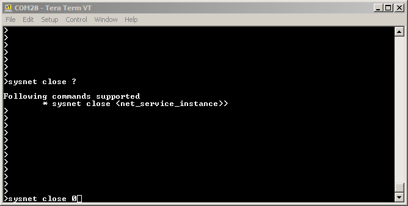
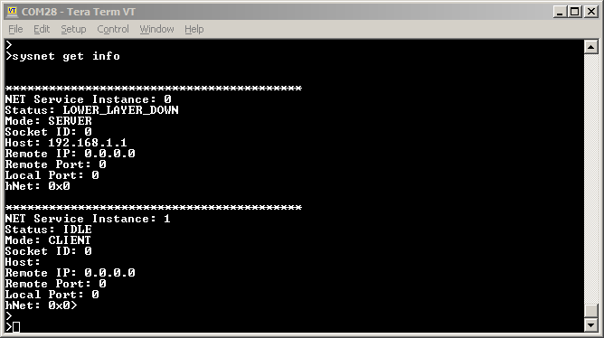

1.3.2 Net System Service Usage
Description
The NET System Service provides simple APIs to enable Server or Client Connectivity for either TCP or UDP. The User need not take care of intermediate states of a TCPIP Connection, as the Service internally takes care of that. User is not required to have Security domain knowledge to establish a secured connection via the application using NET System Service library.
Command Line:
User can follow below commands for NET System Service:
sysnethelp
NET System Service help command which displays the supported CLI commands
sysnet open
Command for Reconfiguring an already open instance of Net System Service

sysnet close
Command to close the instance of Net System Service
sysnet send
Command to send message on the network connection established by the instance of Net System Service

sysnet get info
Command for knowing the Current Information for all the Instances of Net System Service

Abstraction Model
The NET System Service library provides an abstraction to the NetPres/ TCPIP APIs to provide following functionalities.
Connectivity for TCP Client
Connectivity for TCP Server
Connectivity for UDP Client
Connectivity for UDP Server
Self Healing
Reduce code user has to write
Reduce time to develop and maintain
The following diagram depicts the Net System Service abstraction model.
How The Library Works
By default MHC generated code provides all the functionalities to enable Client or Server mode applicatation, with TCP or UDP as the IP Protocol. User needs to configure the required Client or Server mode configuration using MHC. User needs to call the SYS_NET_Open() API with a valid callback to open an instance of the Client/ Server configured in the MHC.

The User Application is expected to call SYS_NET_Task() API periodically as this API ensures that the Net System service is able to execute its state machine to process any messages and invoke the user callback for any events.

The User Application can call SYS_NET_CtrlMsg() API in case it wants to disconnect the opened connection or to reconnect using different configuration.